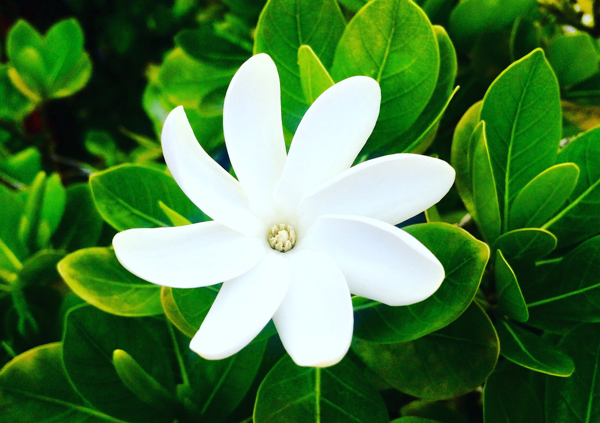
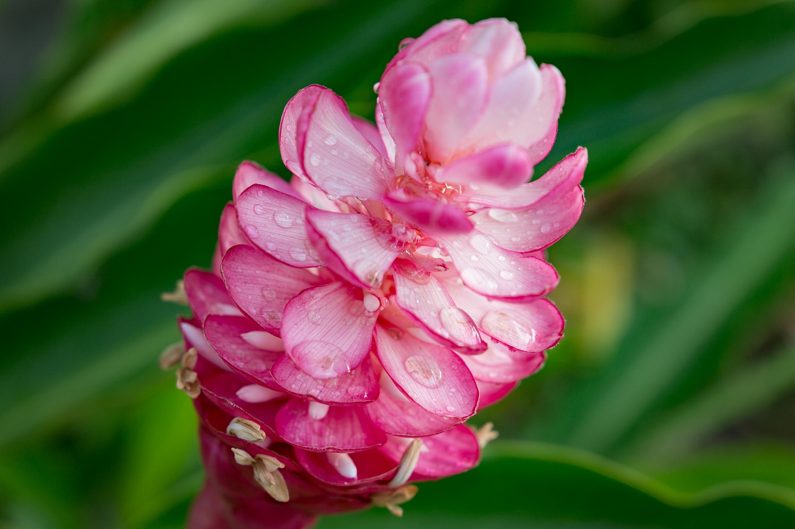
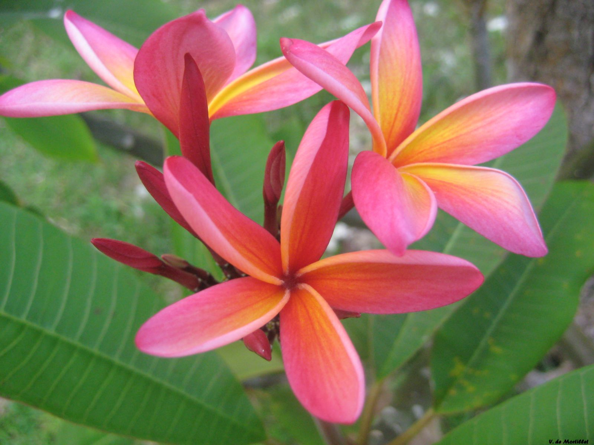

I was born in Papeete, capital city of Tahiti, the main island of French Polynesia.
French Polynesia is an overseas collectivity of France. It includes five archipelagos: the Austral, the Marquesas, the Gambier, the Tuamotu and The Society. Overall, French Polynesia comprises more than a hundred islands and spreads over more than two thousand kilometres. The official language of Tahiti is French.


French Polynesia is a small country of around 300,000 inhabitants. In Tahiti, the island where I lived, the total population is 130,000 inhabitants. As a result, Tahiti can be considered as a close-knit community where everybody knows each other. Tahitian people are usually known for being bon vivant and welcoming.
Paradisiacal scenery


Tahiti is the largest island of the Society islands. It is most famous for the crystal-clear turquoise lagoons and endless white sand beaches scattered around the island. Among the numerous beaches of Tahiti, we can cite Pointe des Pecheurs, Teahupoo beach and the Point Venus.
Pointe des Pecheurs is located in Punaauia, a neighbouring municipality of Papeete. This beach is often praised by local fishermen.

Teahupoo is a famous surf spot which gigantic waves attract surfers from all around the world. The place actually hosts the Tahiti Pro Teahupoo surf competition each year.

Pointe Venus is distinguished by the colour of the sand. This beach actually has black sand. It is situated on the north cost of Tahiti. In addition to the beach, people can also visit the Point Venus lighthouse.

Tahiti’s flora is very rich. It includes a multitude of native species such as the Opuhi flower, the Tiare Tahiti, the frangipani and so on. As tradition requires, Tahitians always welcome visitors with a wreath of flowers. Nature is omnipresent in Tahiti. Tahitian scenery is multifaceted and includes rainforests, beaches, rivers, waterfalls, mountains… Most people live on the coastline, surrounded by the ocean on one side and the mountain on the other.
To get more information about the different species of flowers, click on one of the pictures.
  Tradition and culture
In addition to heavenly beaches and palm trees, the name “Tahiti” may also evoke Tahitian dance. Also known as Ori Tahiti, this dance is characterised by repeated motions of the hips, either sideways or in circles. Dancers traditionally wear vegetal outfits made of leaves, plant fibres and flowers. Moreover, dance is always tightly connected with music. Tahitian dance can be accompanied by ukuleles and traditional drums such as pahu or tōʻere. In the Tahitian culture, dance is meant to tell stories, especially ancient legends and mythologies. Thus, the gestures of the dancers often have a special significance as well.
Here is a clip of a Tahitian dance performance:
Tahitian dance is very popular around the world as well as on the island itself. It holds such a central place in the Tahitian culture that is taught in local schools as part of the curriculum. Tahitian students can even choose it as a module when taking their HSC. Besides, every year is organised the Heiva i Tahiti which is an international dance festival, gathering hundreds of local and overseas dancers. The Heiva is a annual highlight of Tahitian culture and a beloved event for all Tahitian people.
Another famous dance that also belongs to the Tahitian heritage is fire dance. This particular dance involves blazing sticks that are being swirled and thrown in the air. This dance is usually performed at night, to emphasise the radiance of the fire.
Click on the picture to enjoy a clip of a fire dance by the beach!